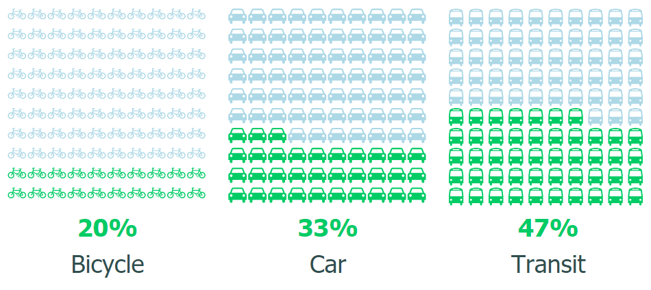
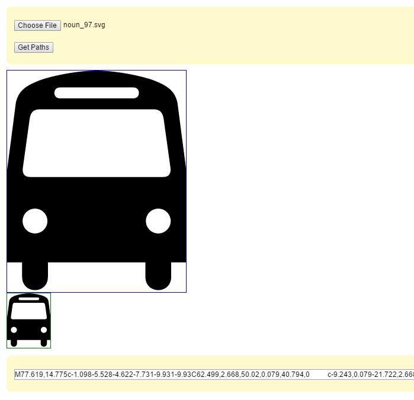

Custom Shapes in the Power BI Waffle Chart
The Waffle Chart is a Power BI visualization that lets you compare data as percentages. One especially useful feature is support for custom SVG-based shapes.
Those custom shapes can be anything that can be represented as an SVG path:

Once you have an SVG file, you can obtain a path by uploading it at /paths. The tool will list the path values that make up your SVG image.

Select the path in one of the boxes, copy it, and use it as a string value in your Power BI input file. A CSV file is usually the easiest format:
47,Transit,"M77.619,14.775c-1.098-5.528-4.622-7.731-9.931-9.93C62.499,2.668,50.02,0.079,40.794,0 c-9.243,0.079-21.722,2.668-26.948,4.846c-5.271,2.199-8.795,4.402-9.875,9.93L0,45.284v42.091h6.84v6.564 c-0.027,8.071,11.745,8.071,11.75,0v-6.564h21.737h0.054H63v6.564c-0.014,8.071,11.759,8.071,11.75,0v-6.564h6.84V45.284 L77.619,14.775z M23.996,7.715h16.385h17.212c3.286-0.009,3.286,4.949,0,4.965H40.327H23.996 C20.694,12.664,20.694,7.706,23.996,7.715z M12.687,74.191c-3.101-0.015-5.631-2.542-5.627-5.682 c-0.004-3.099,2.526-5.627,5.627-5.627c3.136,0,5.665,2.528,5.683,5.627C18.352,71.649,15.823,74.177,12.687,74.191z M40.381,48.482H10.426c-2.925,0.028-3.54-2.081-3.253-4.192l3.088-22.177c0.425-2.67,1.336-4.443,4.854-4.468h25.213h26.149 c3.498,0.025,4.412,1.797,4.854,4.468l3.09,22.177c0.266,2.112-0.348,4.22-3.256,4.192H40.381z M68.848,74.191 c-3.1-0.015-5.628-2.542-5.628-5.682c0-3.099,2.528-5.627,5.628-5.627c3.137,0,5.667,2.528,5.681,5.627 C74.515,71.649,71.985,74.177,68.848,74.191z"Download the full CSV file example.
And that is it.
Live Example
Live Example 2
Troubleshooting
The shapes are not centered
Better results usually come from aligning the path to the top-left corner before importing it. Tools like Adobe Illustrator or Inkscape can help with that.
String length limitation in Power BI Web
If the path is very long, the web client may truncate it. That limitation does not affect the Desktop client in the same way.
Is the Waffle Chart open source
Yes. The source code is available in the GitHub repository.
Is there a shorter example
Yes, stars and triangles work well as compact examples:
Group,Values,Shapes
A,50,"M 0 -1 L 0.588 0.809 -0.951 -0.309 0.951 -0.309 -0.588 0.809 Z"
B,75,"M150 0 L75 200 L225 200 Z"Credits
Icons in the article were obtained from the AIGA collection created by Edward Boatman. You can also download SVG files from the Noun Project.
Back to home